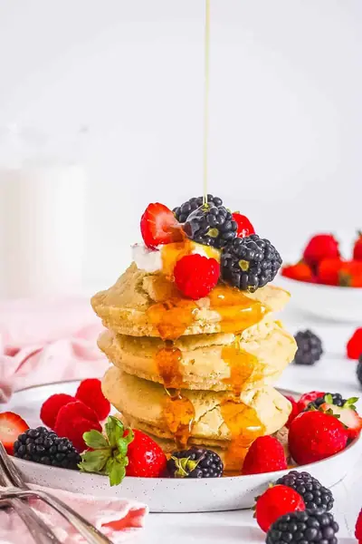

Quick & Fluffy Air Fryer Pancakes (No Flipping!)

Ingredients
- 2 cups all-purpose flour
- 4 tsp baking powder
- ¼ tsp baking soda
- ¼ cup sugar
- 2 cups low fat milk
- 1 egg
- 1 tsp vanilla extract
- ¼ cup butter, melted
Steps
- Preheat the air fryer to 330 degrees F / 170 C while preparing the pancake batter.
- Sift the flour, baking powder and soda into a large mixing bowl.
- Add the sugar and whisk together. Set aside.
- Whisk together the milk, egg, vanilla and butter.
- Pour the milk mixture into the flour mixture and whisk until smooth.
- Lightly spray four 4-inch round springform tins with oil. Scoop ½ cup batter into each tin and place on the airfryer tray.
- Cook in the air fryer for 10-12 minutes. Allow the pancakes to rest in the tin for 2-3 minutes before removing and cooling on a cooling rack.
- Repeat with remaining batter. Batter makes 10 pancakes.
- Serve pancakes topped with a drizzle of maple syrup and fresh berries.
Recipe by Anjali Shah · The Picky Eater, from The Picky Eater. Saved here for personal use; the original has the full notes, tips and photos. Open original